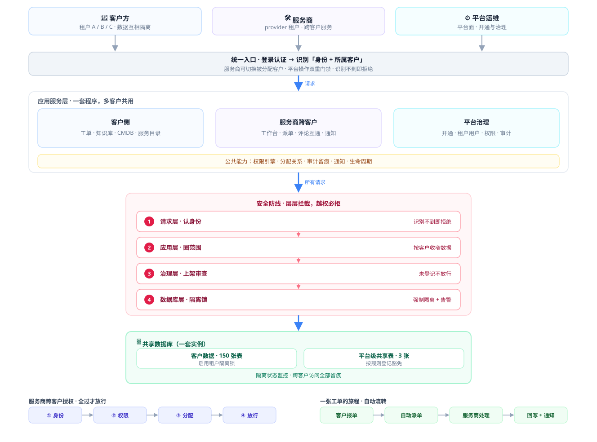

01
30 秒速览
给不熟悉技术的同事
🎯
我们在做什么
让这套 IT 服务管理系统支持 「服务商模式」：一家 IT 服务公司可以只用一套平台，同时为很多家客户提供报修、工单、运维服务。每个客户的数据严格隔离、互不可见，服务商员工可以跨客户统一处理。
📦
本期交付了什么
六块能力：多客户底座、跨客户工单协作、账号与权限体系、员工入职到离职管理、数据隔离加固、客户开通提速（5 分钟超时 → 10.7 秒）。全部经过实机验证并有记录可查。
🛡️
质量与风险
关键业务流程验收 全部通过（110 项通过、2 项按设计跳过、0 失败）；自动化测试覆盖率 80.33% 过线。所有新能力都带开关，出问题可一键回滚，不影响现有使用。
02
本期变化：以前做不到，现在可以了
用业务场景说明，不含技术术语
一套系统服务多个客户
每个客户要单独部署，成本高；数据放在一起又有泄露风险
→一套系统同时服务多个客户，数据按客户严格隔离（153 张数据表完成隔离梳理，150 张已启用隔离策略）
服务商跨客户处理工单
要来回切换账号，看不到客户工单全貌，处理结果靠人工同步
→服务商工作台统一查看所有客户工单：自动派单、跨客户查看详情、评论互通、处理结果自动回写客户侧
账号与权限管理
权限配置分散、容易配错；平台级敏感操作防护较弱
→权限由系统统一自动下发；平台敏感操作加「双重门禁」（仅平台管理员可用），越权操作被拦截并留痕
员工从入职到离职
邀请入职流程不完整；离职靠手工清理，容易遗漏登录会话和工单分配
→邀请 → 首登强制改密 → 日常管理 → 一键离职：账号停用 + 强制下线 + 工单分配全部回收 + 全程审计记录
新客户开通
开通一个新客户需要等待超过 5 分钟，经常超时失败
→10.7 秒完成开通（实测），提速约 30 倍，浏览器端一次成功
数据安全兜底
只有应用层防护，一旦程序有疏漏，存在看到别家数据的风险
→数据库层再加一道「租户隔离锁」，150 张表全量验证通过，并接入实时监控告警
03
关键数字（每个数字意味着什么）
均为实机跑通结果，有验收记录可查
110 / 110关键流程验收全部通过
业务规则 70 项 + 用户管理 30 项 + 离职流程 10 项；另有 2 项按设计跳过，0 项失败
153 张数据表完成隔离梳理
150 张已启用「租户隔离锁」，3 张按业务规则豁免；隔离演练 70 项全部通过、零遗漏
10.7 秒新客户开通耗时
从「超过 5 分钟超时」优化到 10.7 秒，开通效率提升约 30 倍
80.33%自动化测试覆盖率
超过 80% 的团队标准线；核心流程都有自动化用例守着，改动不易引入故障
0 失败存量数据修复
对老数据做了一次全量体检与修复（账号与客户关系），实跑 0 失败
131 次9 天代码提交
平均每天约 15 次小步交付，功能、修复、文档同步推进
04
六大模块进度一览
✅ = 已完成 🟡 = 收尾/深化中
① 多租户基础底座
✅ 已完成
多客户身份、权限、审计、数据隔离等基础能力全部打通，是后续所有功能的地基。
② 跨客户工单协作
🟡 主体完成
自动派单、跨客户查看与处理、评论互通、通知直达工单已上线；与服务商内部流程的深度集成按计划推进。
③ 账号权限与平台安全
✅ 本期收口
经过 9 轮加固：角色权限清晰可见、平台敏感操作双重门禁、越权尝试全部拦截并留痕。
④ 员工全生命周期管理
🟡 接近完成
邀请入职、首登改密、日常账号管理、离职一键回收已上线；「账号到期自动回收」已开发完成、测试通过，正在收尾。
⑤ 数据隔离（数据库层）
✅ 已完成
从试运行观察切换到全量启用：150 张数据表加上「租户隔离锁」，验证全部通过，监控告警已接入。
⑥ 质量与验收体系
✅ 持续运行
验收脚本 + 浏览器实操走查 + 自动化测试常态化；每个版本都有可复查的验收记录。
05
系统架构一图看懂（图形版）
图 2 · 阅读顺序自上而下：谁在用 → 入口 → 能力 → 防线 → 数据

📌 图表说明：方框＝系统组成部分；箭头＝请求与流程走向；蓝＝客户侧、紫＝服务商侧、青＝平台治理、红＝安全防线、绿＝数据与隔离；①–④＝安全防线顺序。本图为总览示意，准确设计以 docs/multi-tenant/01-architecture.md 为准；数字为 2026-10-09 口径。
06
下一步计划与风险说明
未来 1–2 周
接下来做什么
1账号到期自动回收上线 —— 开发与测试已完成，收尾提交后即可使用（到期账号自动失效、权限自动回收）。
2跨客户工单流程深度集成 —— 让客户报的工单能自动进入服务商的内部处理流程，完成后闭环回到客户。
3权限评审清单剩余项复评 —— 对新增角色/权限/入口做最后一轮安全复评。
4持续回归测试与文档同步 —— 保持每周回归，操作手册随功能同步更新。
风险与保障（领导最关心的三点）
- 所有新能力默认带开关，出现异常可一键回滚，不影响现有客户正常使用
- 关键操作全部有审计记录，谁在什么时间做了什么可随时追溯
- 数据隔离有「应用层 + 数据库层」双保险，并接入实时监控告警
术语小抄：
租户 = 一个客户/公司的独立数据空间
MSP = IT 服务商（为多家客户提供 IT 服务）
工单 = 报修/服务请求的处理单
审计 = 操作记录，事后可追溯